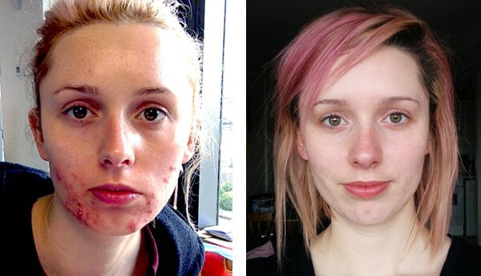

Scapă de acnee odată pentru totdeauna în doar 1 lună. Vă voi spune cum!
Nu mai căuta produsul care te va scăpa de acnee. Am făcut eu asta pentru tine! Sunt sigură că îmi vei fi recunoscătoare.
Bună! Sunt Doina. Am suferit de acnee severă timp de aproape 4 ani. Chiar mi-am promis că, dacă scap de acele inflamații oribile, va trebui să scriu o carte despre asta. Ei bine, planul cu cartea nu s-a materializat, dar am scăpat complet de acnee!
Dacă ai vârfuri despicate, unghii casante, ten lipsit de strălucire, pungi/cearcăne sub ochi și suferi de acnee, atunci ai venit la locul potrivit. Am rezolvat toate aceste probleme deodată. Poate crezi că acest lucru nu este posibil. Te înșeli în acest caz. Citește în continuare și vei afla de ce.
Mi-a luat ani întregi să încerc toate produsele cosmetice posibile, cu toate acestea, niciunul nu m-a ajutat să scap de inflamațiile de pe față. Și nu este surprinzător, deoarece cauza era ascunsă adânc în corpul meu.
Când am împlinit 20 de ani, problema a devenit foarte grav, îmi apăruse acnee pe spate… Așa arăta:
Pielea mea este foarte sensibilă, deci, orice cremă anti-acnee, chiar și cea mai scumpă, îmi cauza imediat iritații. În plus, îmi scărpinam coșurile dureroase, iar acestea deveneau și mai mari. Tratamentul de curățare a feței nu a ajutat, ci doar a format o coajă pe față, crescând abcese sub ea. Am încercat să le ascund cu toate anti-cearcănele posibile, dar am agravat problema făcând acest lucru. S-a ajuns în punctul în care părinții m-au dus la specialist și au plătit pentru întreaga examinare medicală, care a dezvăluit că am paraziți numiți lamblia. Paraziții mi-au cauzat inflamația de pe față. .
Mi s-a prescris un medicament pe care trebuia să-l iau potrivit unui regim foarte complicat. Era un medicament chimic, de aceea mă făcea să mă simt foarte rău. Am încetat să-l mai iau și am decis să încerc să-mi curăț organismul folosind metode tradiționale. Am luat bicarbonat de sodiu, am încercat să țin dietă. Toate acestea în zadar.
Acum o lună și jumătate am găsit un specialist care mi-a prescris un alt medicament. Așa cum s-a dovedit, soluția problemei era foarte simplă și accesibilă! Acest medicament minunat se numește - remediu antiparazitar . Compoziția complet naturală, forma comodă de prezentare și siguranța sănătății au avut o influență mai mare decât dubiile mele. Nu necesită prescripție medicală și conține doar extracte de plante și alte ingrediente naturale. O capsulă pe zi este suficientă. Am luat în fiecare dimineață.
După 2 săptămâni de administrare a , am observat primele rezultate. Nu doar că fața mea arăta mult mai curată, dar cearcănele de sub ochi dispăruseră (m-am confruntat ceva timp cu problema asta). Eficacitatea acestuia îmi era pur și simplu întipărită pe față! După 4 ani de nesiguranță din cauza cicatricilor și a pielii inflamate de pe față, a neputinței de a începe o relație serioasă, de teamă că cineva m-ar putea vedea fără machiaj - problemele mele au fost rezolvate repede. Acneea dispărea chiar sub ochii mei.
Orice fată își dorește să fie frumoasă. Eu aveam chiar mai multă nevoie de asta, deoarece sunt cântăreață și trebuie să cânt adesea în public. Iar, din cauza imperfecțiunilor pielii, trebuia să anulez adesea sau să refuz concertele care aveau loc după-amiaza, deoarece pielea mea cu probleme era foarte vizibilă în lumina zilei, chiar dacă purtam machiaj.
După 2 săptămâni de administrare a capsulelor nu doar că am scăpat de acnee, dar am și slăbit puțin în talie! Stomacul meu a devenit mai plat, așadar, formele mele au devenit mai vizibile. Părul meu a devenit strălucitor și a revenit la viață, nu mai arăta extrem de uscat. Este oribil să-ți imaginezi cât de mult îmi otrăveau paraziții întregul organism. Roșeața și cicatricile acneei dispăruseră.
Medicamentul este acum pe lista mea de produse pe care trebuie să le am. Când am reușit să scap de paraziți și de acnee, am putut să cânt tot timpul. Nu am mai cheltuit bani pe produse cosmetice nefolositoare. Acum nu mai trebuie să mă ascund sub un strat gros de machiaj. Nu îmi mai este rușine de propria față. Acum am mai puțin timp liber, deoarece petrec mai mult timp cu prietenii sau la muncă, pe lângă asta, acum am un iubit. De aceea nu voi scrie o carte despre modul în care am scăpat de acnee, dar voi răspunde cu bucurie la toate întrebările în comentarii!
Văd multe produse contrafăcute pe internet, aveți griji la înșelătorii. Acesta este singurul reprezentat autorizat al .
Urmează link-ul de mai jos:

Florina 2021
Bună, Doina! Și eu sufăr de acnee, dar cum aș putea să fiu infectată cu paraziți la 19 ani?
Doina 2021
Paraziții pot pătrunde în organism prin mâncare sau apă. Legumele nespălate corespunzător, carnea mânuită prost, mâinile nespălate pot să fie toate infectate. Mâncarea noastră poate să devină cauza majoră a tuturor bolilor. Dacă vorbim de vârstă, nimeni nu este imun la paraziți.
Ștefania 2021
Doina, acest medicament poate fi administrat și copiilor? Deoarece copiii suferă adesea de asemenea boli.
Doina 2021
este sigur pentru copii. Este un amestec de plante, un produs complet natural. Prietena mea îl dă copiilor ei, iar lor li se pare delicios :-)
Laura 2021
Acest medicament chiar m-a ajutat. Și pielea mea lăsa mult de dorit, dar, după 3 săptămâni de administrare a , mi-am aruncat anti-cearcănul! 
Eugen 2021
Aș dori să adaug că acest medicament nu doar că ajută la îmbunătățirea frumuseții naturale, ci și previne bolile și întărește sistemul imunitar.
Rodica 2021
Și eu am luat pentru a scăpa de acnee. Și unde mai pui că au fost vindecate și alergiile cronice!
Dan 2021
Sunt un suporter al nutriției sănătoase, sunt vegetarian și încerc să am grijă de sănătatea mea. Și totuși, nu am reușit să scap de această infecție. În ciuda postului, testele mele arătau de fiecare dată că am paraziți. Toate acestea mi-au cauzat probleme cu stomacul și, desigur, mi-au afectat tenul. Este singurul medicament care m-a ajutat că scap de probleme și să mă simt sănătos și atractiv din nou (deja nu mai am paraziți de 7 ani).
Aurel 2021
Mă va ajuta acest medicament să scap de viermi?
Doina 2021
Da. Acest produs elimină toate tipurile de paraziți și reziduurile acestora.